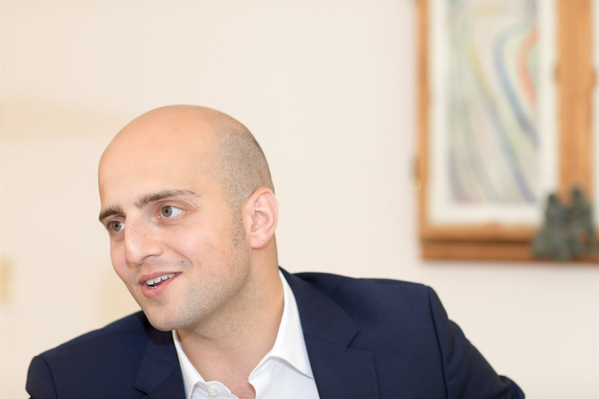
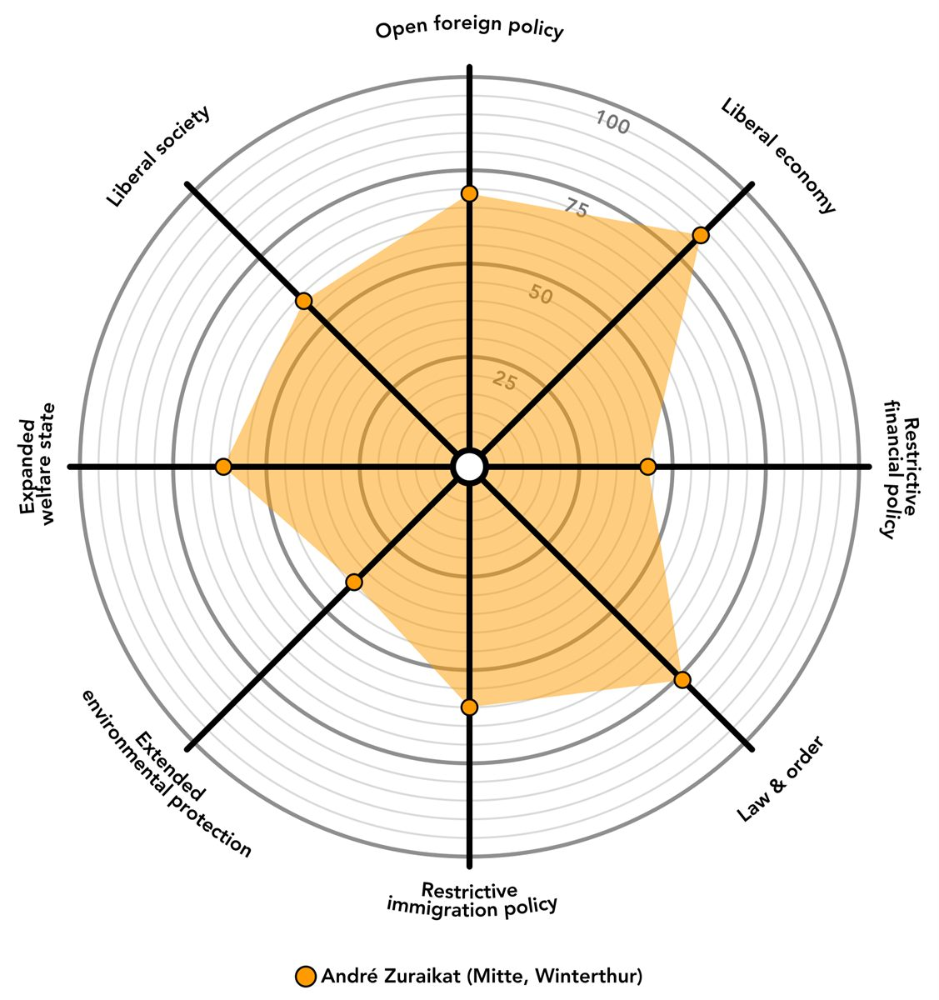

Über mich
Stadtparlamentarier aus Winterthur
Ich sitze seit 2019 für Die Mitte im Stadtparlament Winterthur, präsidiere seit 2022 den Bezirksverband und arbeite in der Kommission Bildung, Sport und Kultur.

Politischer Weg
- 2019–2022 Präsident Die Mitte Stadt Winterthur
- seit 2019 Mitglied Stadtparlament und Kommission Bildung, Sport und Kultur (BSKK)
- seit 2022 Präsident Die Mitte Bezirk Winterthur
- 8. März 2026 Wiederwahl ins Stadtparlament (Legislatur 2026–2030)
Ein Teil meiner Familie stammt aus Jordanien. Die Solidarität, die ich dort erlebt habe, prägt meinen Blick auf Integration und Zusammenhalt in Winterthur. Karate ist meine Leidenschaft — dem Verein verdanke ich viel, deshalb liegt mir Sportförderung am Herzen.
Profil
Mein Lebensweg: Karate
Ich gehöre in der Partei Die Mitte zum progressiven Flügel. Wichtig ist mir eine liberale Gesellschaft und eine offene Aussenpolitik. Ich engagiere mich für Toleranz und Solidarität. Gleiche Chancen für alle beginnt bei der Bildung.
Seit über 30 Jahren mache ich Karate — die letzten 15 Jahre als Trainer für den Karate-Club 3K. 4. Dan seit 2023 (Yondan), Leiter Karate Jugend+Sport, internationaler Schiedsrichter (A-Lizenz).
Video: Mein Lebensweg · Karate

Bushido als Kompass
Aufrichtigkeit, Mut, Güte, Höflichkeit, Wahrhaftigkeit, Ehre und Treue — die sieben Tugenden der Samurai begleiten mich im Sport und in der Politik. Mehr dazu im Interview mit Christian Huggenberg.
Kurz nachgefragt
- An was denkst Du morgens beim Aufstehen zuallererst?
- Produktiv zu sein.
- Welches ist Dein Lieblingskleidungsstück?
- Mein Trainingsanzug — der Gi.
- Was macht Dich glücklich?
- Mein Leben so wie es ist.
- Wofür gibst Du zu viel Geld aus?
- Ich bin sparsam.
- Wofür denkst Du geben die Menschen allgemein zu viel Geld aus?
- Für Statussymbole und Dinge, mit denen sie anderen imponieren wollen.
- Was macht Dich richtig sauer?
- Sturheit.
- Welches ist Dein Lieblingsbuch?
- The 48 Laws of Power von Robert Greene. Dabei geht es um die Frage, wie mit Macht umgegangen wird und wie man sich dagegen wehren kann.
- Was isst Du am liebsten?
- Alles, was aus der Familienküche kommt. Italienisch, jordanisch. Mein absolutes Lieblingsgericht ist Lasagne.
- Wo möchtest Du gerne mal hinreisen?
- Karate ist meine grosse Leidenschaft, daher möchte ich gerne mal nach Japan reisen.
- Was würdest Du jungen Leuten sagen, weshalb es sich lohnt, sich politisch zu engagieren?
- Unsere Gesellschaft lebt nicht nur von eigennützigem Handeln sondern von der Gemeinschaft, die gepflegt werden muss. Dafür lohnt es sich, sich einzusetzen.